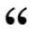
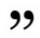
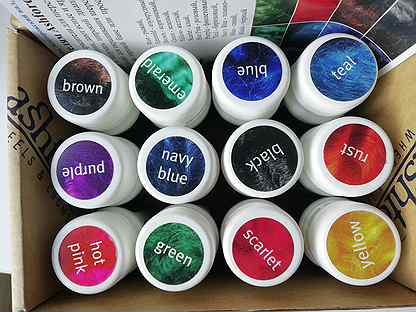

Как мы делаем шерстяные джемперы гипоаллергенными
Три человека из пяти носят синтетические джемперы, потому что считают натуральную шерсть колючей и аллергичной. Бытует мнение, что слезы, сопли и желание чесаться вызывает овечья шерсть как таковая. Но наши лабораторные исследования показали, что сам материал не при чем: иммунитет склонных к аллергии людей бурно реагирует на кожный жир животных, пыль и цветочную пыльцу. Когда человек надевает джемпер, аллергены попадают в воздух, оказываются у него в носу и в горле и провоцируют приступ.
Еще аллергический насморк могут вызывать пигменты для тонирования шерсти, а кожный зуд и сыпь-крапивницу — шерсть с невычесанными колючими волосками.
Перед вязкой джемперов мы вычесываем и моем овечью шерсть семь раз. А для окрашивания выбираем пигменты, одобренные Ассоциацией аллергологов России.
Чешем шерсть вручную семь раз, моем пять раз: никакой грязи на выходе
Мы получаем сырьевую шерсть грязной. Она пропитана кожным салом животных, пылью и цветочной пыльцой. Еще в необработанной шерсти полно засохшей травы, которая будет колоть владельца джемпера, если не вычесать ее в ноль.
Чтобы защитить покупателей от приступов кожного зуда, мы делаем так:
- проходимся по шерсти чесалками семь раз;
- заливаем ее мыльным раствором на сутки;
- промываем шерсть в пяти водах, чтобы избавиться от аллергенов.
Закупаем шерсть овец тонкорунной кавказской породы: она не колется
Иногда «аллергия» на овечью шерсть может оказаться не истинной аллергией, а естественной реакцией кожи на соприкосновение с колючим волокнистым материалом:
 Когда к нам обращаются люди с чувствительной кожей, они часто жалуются на зуд при ношении шерстяных джемперов. Но в 9 случаев из 10 лабораторный анализ крови «Аллерген k20 — Шерсть» дает отрицательный результат. Потому что кожа таких людей остро реагирует не на химические вещества, которые содержатся в шерсти, а на грубую колючую пряжу. Это нормальная реакция на механический раздражитель. 
Чтобы джемперы «Вязань» могли носить обладатели чувствительной кожи, мы вяжем их из тонкорунной шерсти овец кавказской породы. Такие джемперы можно надевать на голое тело и носить по двадцать часов подряд.
Из колючей шерсти овец не тонкорунных пород мастерят аксессуары, которые не соприкасаются с кожей:
Шерсть овец кавказской породы тонкая и приятная на ощупь. Мы вяжем из нее взрослые и детские свитера:
Красим шерсть безопасными пигментами
Аллергия случается из-за синтетических красок для текстиля и шерсти. По нашему опыту, такое происходит с китайскими noname-пигментами, которые продаются на Алиэкспрессе и попадают на рынок без тестирования. Они стойкие и дешевые. Но никто не знает, как на них отреагирует ослабленный иммунитет или чувствительная кожа.
Мы работаем с новозеландскими красителями для шерсти и полиамида марки Ashford. Эти краски:
- Натуральные. Они получили французский сертификат Ecocert, который подтверждает: завод-производитель этих красителей не использует ядовитые химические вещества.
- Гипоаллергенные. Сертифицированы EAACI — Европейской Ассоциацией клинических иммунологов. Ассоциация разрешает применять эти пигменты при изготовлении детской одежды и постельного белья.
- Деликатные. Краски Ashford глубоко впитываются в овечью шерсть и хорошо переносят машинную стирку, но не делают волокна грубыми. Поэтому носить крашеные джемперы «Вязань» так же приятно, как белые.

Возвращаем деньги, если джемпер спровоцировал аллергию
Мы хотим, чтобы покупатели вязаной одежды нашего производства тянулись к ней в шкафах чаще, чем к другим вещам, и никогда не обращались к иммунологу с зудом, слезами и аллергическим насморком. Поэтому многократно вычесываем сырье, моем и красим натуральными пигментами. Несмотря на это, приступ аллергии может случиться у людей с ослабленным иммунитетом.